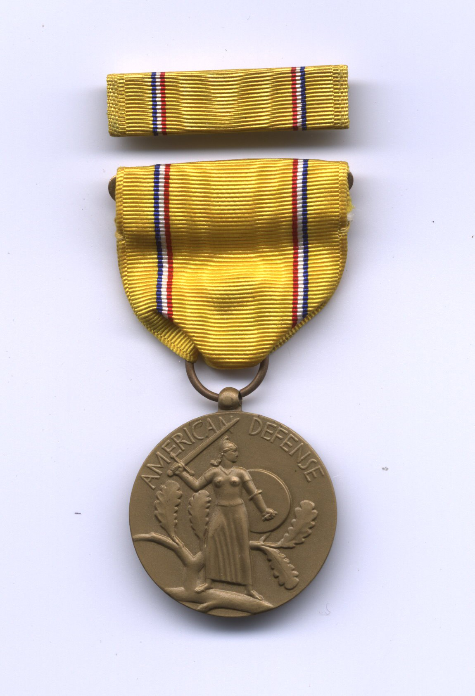
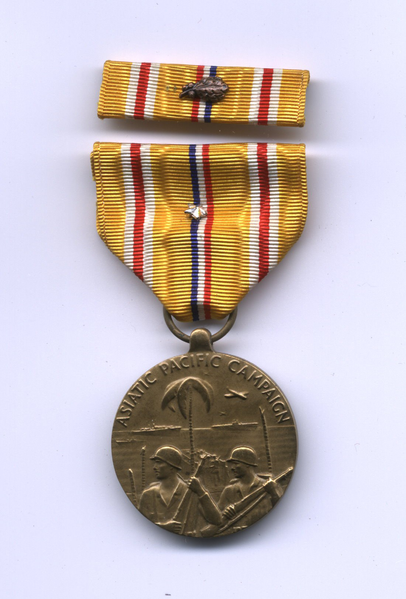
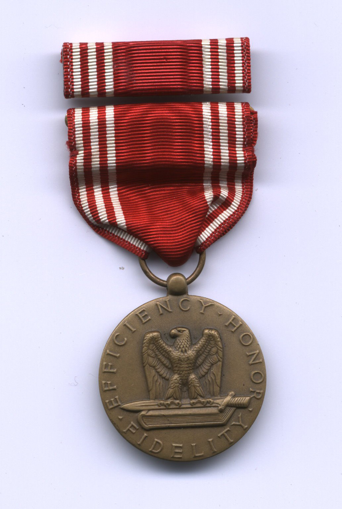
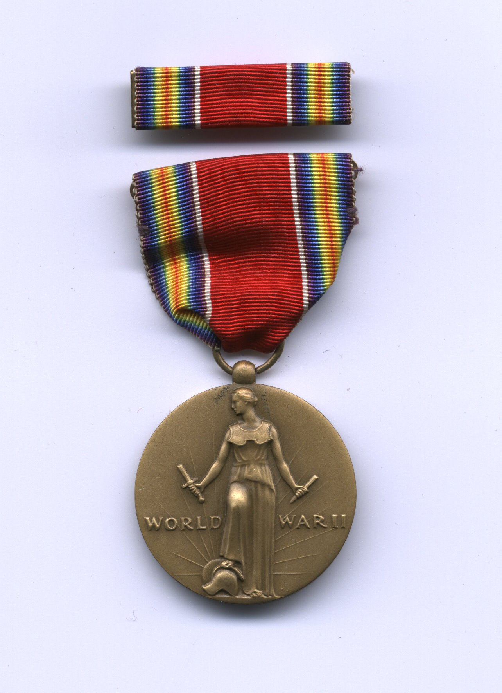
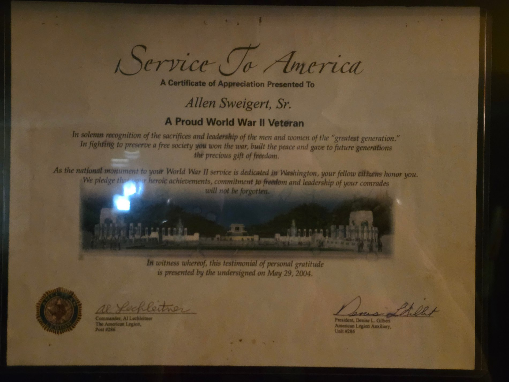
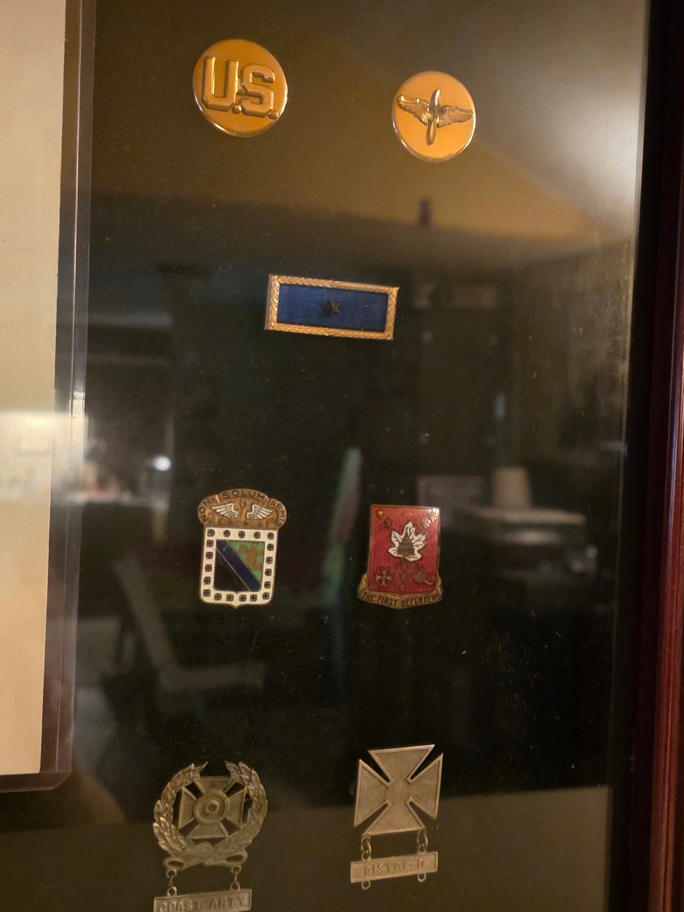

Decorations & Honors
Allen's WW2 service medals, and his later recognition as a sixty-year member of American Legion Post 286, Cressona, Pennsylvania — the same post whose cap he wears throughout the 2006 interview. His discharge papers cite the Good Conduct Medal (General Order 3, Headquarters 3d Attack Group, August 2, 1943) and the Distinguished Unit Badge (General Order 3, Headquarters 3d Attack Group, March 25, 1944) — see his full discharge record in the Military Record section.





His Insignia
Branch and unit insignia from his own collection: U.S. and Army Air Forces collar discs; the 213th Coast Artillery Regiment's crest, motto “Non Solum Armis” (“Not by Arms Alone”); and the “First Defenders” crest of the same regiment's Schuylkill County lineage. Below, two marksmanship qualification badges, bars reading “Coast Arty” and “Pistol D.”
